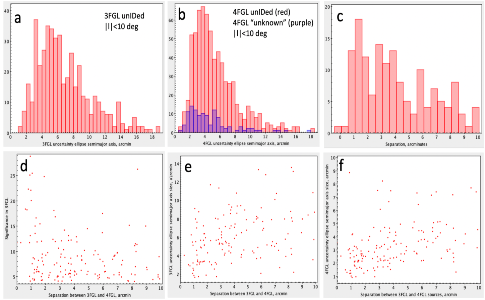

Growing number of Fermi LAT sources, improving coverage of Galactic plane with Chandra (CXO) and XMM-Newton X-ray observatories, and deeper high-resolution optical, NIR, and radio surveys enable multiwavelength classification of unidentified LAT sources. These are typically very labor-intensive because of the large number of sources and large number of multiwavelength parameters (features) characterizing them. Therefore, Machine-Learning (ML) methods can be of a great help.
Fig 1. A region of Galactic plane (the background image if from the H.E.S.S. Galactic Plane survey) with 2FGL (magenta), 3FGL (yellow), 8-yr prelim (red), 4FGL (blue) 95% confidence ellipses shown.
Figure 2. The 3 upper panels show the histograms for unIDed Galactic (|b|<10 deg). Panels a and b show the histograms of semimajor uncertainty ellipse for 3FGL and 4FGL sources. Panel c shows the distribution of offsets between the unIDed 3FGL and 4FGL sources whose positions are <10' from each other. The three bottom panels show the significance of the 3FGL LAT source (having a match in 4FGL within r<10'; panel d) and the size of the uncertainty ellipse (in 3FGL and 4FLG, panels e and f) as a function of separation between the 3FGL source and its best match in 4FGL. One can see that the offset between the 3FGL and 4FGL source does not depend noticeably on the 3FGL source significance and that the correlation between the source uncertainty ellipse size and the separation improves if the 4FGL positional uncertainty is used (i.e. localized 4FGL sources tend to be closer to their 3FGL predecessors).
| CXO Target Name | ACIS Texp, ks | 3FGL Name | 4FGL Name | 3FGL sign. | 4FGL sign. | 3FGL spec. curv. | 4FGL spec. curv. | 3FGL Spec | 4FGL Spec | 4FGL En Flux | GLON | GLAT |
| 2FGL J0212.1+5318 | 30. | 3FGL J0212.1+5320 | 4FGL J0212.1+5321 | 25.068447 | 43.544834 | 6.310335 | 11.442324 | LogParabola | LogParabola | 1.6221026e-11 | 134.92581 | -7.630409 |
| 2FGL J0934.0-6231 | 43. | 3FGL J0933.9-6232 | 4FGL J0933.8-6232 | 22.06935 | 38.367077 | 8.8180485 | 14.809568 | LogParabola | LogParabola | 1.2592141e-11 | 282.24362 | -7.9074183 |
| 3FGL J1306.4 -6043 | 10. | 3FGL J1306.4 -6043 | 4FGL J1306.3-6043 | 25.448307 | 37.24788 | 7.1673965 | 11.656551 | LogParabola | LogParabola | 2.4102173e-11 | 304.75537 | 2.0990448 |
| 2FGL J0340.5+5307 | 10. | 3FGL J0340.4+5302 | 4FGL J0340.4+5302 | 22.307777 | 28.90842 | 5.9493866 | 14.394521 | LogParabola | LogParabola | 5.2354985e-11 | 146.7922 | -1.821867 |
| G311.5-0.3 | 13. | 3FGL J1405.4-6119 | 4FGL J1405.1-6119 | 24.823463 | 22.05864 | 6.9925556 | 10.0069275 | LogParabola | LogParabola | 8.916591e-11 | 311.6595 | 0.2836073 |
| Carina Clusters Ptg 5 | 57. | 3FGL J1047.3-6005 | 4FGL J1046.7-6010 | 9.035035 | 14.480129 | 4.6231337 | 6.4538627 | LogParabola | LogParabola | 2.3524816e-11 | 288.00613 | -0.9672107 |
| RCW 38 | 189. | 3FGL J0859.3-4732 | 4FGL J0859.2-4729 | 5.917928 | 13.8408985 | 2.3945305 | 3.909002 | PowerLaw | LogParabola | 1.9658546e-11 | 267.9374 | -1.0268956 |
| 3FGL J1016.5-6034 | 2. | 3FGL J1016.5-6034 | 4FGL J1015.5-6030 | 11.341704 | 11.72494 | 5.82827 | 2.4684863 | LogParabola | PowerLaw | 1.8504698e-11 | 284.8662 | -3.2181122 |
| GBS13-3 | 2. | 3FGL J1754.0-2930 | 4FGL J1754.6-2933 | 15.030973 | 10.205634 | 6.6750445 | 5.4923315 | LogParabola | LogParabola | 1.1110873e-11 | 0.48208407 | -2.0071337 |
| HESS J1800-240B | 79. | 3FGL J1800.8-2402 | 4FGL J1800.9-2407 | 17.480143 | 9.364669 | 5.431241 | 3.286776 | LogParabola | LogParabola | 3.0728902e-11 | 5.8768964 | -0.51136285 |
| 4FGL J1759.7-2354 | 8.334932 | 5.116669 | LogParabola | 3.129453e-11 | 5.9454074 | -0.16794126 | ||||||
| 4FGL J1800.2-2403 | 4.2316637 | 0.70646095 | PowerLaw | 1.35876805e-11 | 5.85668 | -0.3397608 | ||||||
| 4FGL J1801.8-2358 | 10.059971 | 1.1774077 | PowerLaw | 3.5672968e-11 | 6.1067977 | -0.610649 | ||||||
| RCW106 | 59. | 3FGL 1620.0-5101 | 4FGL J1619.4-5106 | 8.1887045 | 7.3889356 | 3.0495353 | 2.1348917 | PowerLaw | PowerLaw | 2.5273278e-11 | 332.5897 | -0.61530745 |
| GBSGTO4/AX J1740.1-2847 | 3. | 3FGL J1740.5-2843 | 4FGL J1740.4-2850 | 15.128961 | 6.879431 | 4.8024235 | 3.4549196 | LogParabola | LogParabola | 9.233849e-12 | 359.48547 | 1.0026399 |
We have found a promising young pulsar candidate with a luminous PWN (3FGL J1016.5-6034). A short CXO imaging observation played a crucial role in the identification of this source. We also found two more pulsar candidates one of which may be in a low mass binary. In addition, we found some CV and AGN candidates but CVs (except when in nova outburst) are not known to be GeV sources.
We acknowledge the support for this work from NASA award 80NSSC17K0760 and Chandra award AR3-14017X.